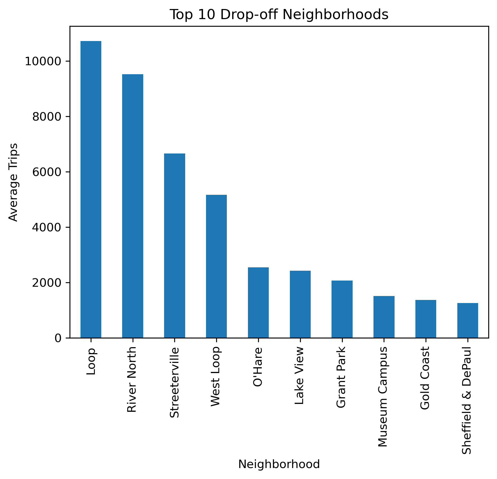

Zuber Taxi Trip Analysis
Analicé datos de viajes en taxi en Chicago para identificar patrones de demanda
y evaluar la relación entre las condiciones climáticas y la duración de los
trayectos. Utilicé Python, Pandas, Matplotlib, Seaborn y SciPy
para preparar y explorar los datos, identificar los principales destinos y
compañías de taxi, visualizar los resultados y realizar pruebas estadísticas.
El análisis mostró que Loop concentró el mayor promedio de viajes
finalizados y que Flash Cab registró el mayor número de
viajes. Además, los viajes entre el Loop y el Aeropuerto Internacional
O'Hare tuvieron una duración promedio aproximadamente 7 minutos mayor
bajo condiciones climáticas desfavorables; mediante una prueba t para
muestras independientes se encontró una diferencia estadísticamente significativa
(p ≈ 6.52 × 10⁻¹²).
Tecnologías:
Python · Pandas · Matplotlib · Seaborn · SciPy

Ver proyecto en GitHub
Global Video Game Market Analysis
Analicé datos históricos del mercado global de videojuegos para identificar
patrones de ventas entre plataformas, géneros y regiones, y obtener información
relevante para la planificación comercial. Utilicé
Python, Pandas, NumPy, Matplotlib, Seaborn y SciPy
para preparar y explorar los datos, analizar tendencias de ventas, comparar
el desempeño entre plataformas y géneros, estudiar la relación entre las
puntuaciones de usuarios y críticos con las ventas y realizar pruebas de
hipótesis. El análisis mostró diferencias importantes en el comportamiento
de las plataformas y los mercados regionales; además, para PS4 se observó una
correlación moderada entre las puntuaciones de los críticos y las ventas
(r ≈ 0.407), mientras que las puntuaciones de usuarios mostraron una
relación prácticamente nula (r ≈ −0.032). Las pruebas
estadísticas también permitieron evaluar diferencias entre las puntuaciones
de usuarios de distintas plataformas y géneros.
Tecnologías:
Python · Pandas · NumPy · Matplotlib · Seaborn · SciPy
Visualización destacada pendiente.
Ver proyecto en GitHub
Used Car Market Dashboard
Desarrollé una aplicación interactiva para explorar datos del mercado de
vehículos usados y analizar la relación entre características como el
kilometraje y el precio. Utilicé
Python, Pandas, Plotly Express y Streamlit
para preparar los datos, crear visualizaciones interactivas y construir
una interfaz que permite explorar el dataset mediante gráficos como
histogramas y diagramas de dispersión. Finalmente, desplegué la aplicación
en Render, llevando el análisis desde el procesamiento de
los datos hasta una herramienta web funcional y accesible.
Tecnologías:
Python · Pandas · Plotly Express · Streamlit · Render
Captura de la aplicación pendiente.
Ver aplicación
Ver proyecto en GitHub